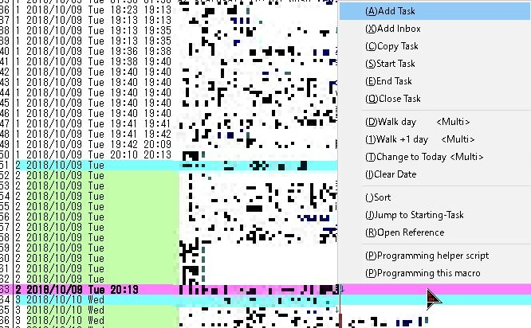

Tritask スタートアップガイド¶
タスク管理ツール Tritask について、導入から基本操作まで解説します。
想定読者¶
Tritask はツールの性質上、ある程度利用者のスキルを要求します（課題でもあります。今後改善していきたいです）。
想定読者は以下のとおりです。
(1) タスク管理に取り組んでいる方¶
既に タスク管理に取り組んでいる方 を対象とします。
タスク管理について全く知らない方には厳しいかもしれません。が、もしかしたら読めるかもしれません。読んでみて判断していただければと思います。
ちなみに、TaskChute を知っている方は理解しやすいと思います。Tritask は TaskChute を元にしてつくったツールです。
(2) 秀丸エディタを利用している方¶
Tritask は秀丸エディタ上で動作するツールですので、秀丸エディタを利用している方が対象となります。
秀丸エディタを使っていない方でも使えないことはないですが、秀丸エディタは有償のテキストエディタであり、またマクロ登録といった作業はやや煩雑で、知らない場合は苦戦が予想されます。今のところ本ページでも詳しい解説は致しません。
(3) Python をインストールできる方¶
Tritask はプログラミング言語 Python で記述されていますので、実行には Python 環境が必要となります。
そのため、Python を既に利用しているか、あるいはインストールを行える程度のスキルが必要となります。本ページでは Python のインストールについて詳細な解説は致しません。
Tritask について¶
まずはじめに、Tritask のコンセプトについて簡単に説明しておきます。詳細は Tritask のコンセプト もご覧ください。
Tritask とは¶
タスク管理メソッドおよびツールの一種です。
TaskChute に強く影響されています。TaskChute から「見積もり機能」と「Excel依存」を省き、テキストエディタ上で動かせるよう極限までフォーマットをシンプルにしたものだと考えれば大体合ってます。
Tritask では 一行に一つのタスクを書き、これを並べる ことでタスクリストを実現します。並び順は「今日やるタスク」「明日以降やるタスク」「昨日以前にやったタスク」の三種類に分かれます(Triは3を意味します)。 ソート操作を実行するだけで並ぶので、ユーザーが手作業で並び替える手間はありません。
ユーザーがやることは、
- (1) タスクを Tritask に洗い出していく
- (2) 洗い出したタスクに開始日を設定していく
- (3) ソートする
これだけです。これだけで「今日やるタスク」と「明日以降やるタスク」に分かれます。ユーザーは「今日やるタスク」に集中するだけです。また、「今日やるタスク」内のタスクを意図した順番に並び替えることも可能ですので、TaskChute みたく直列タスクリスト（上から順番に実行するリスト）もできます。
もう一つ、Tritask の特徴として テキストエディタ上で操作する ことが挙げられます。画面やダイアログを経由せず、キーボードだけで素早く操作できるのが特徴です。データもただのテキストファイルですので管理が容易です。
タスクの開始と終了¶
タスクの開始/終了状態の管理についても取り上げておきましょう。まず既存ツールでは、
- TODO リスト → チェックを付ける
- TaskChute → 開始時刻と終了時刻を記入する
となっていますが、Tritask では TaskChute のやり方を踏襲しています。開始時刻と終了時刻を記入する スタイルです。
ここで「え？時刻をいちいち手で打つの？」と思われるかもしれませんが、ご安心ください。Tritask の機能として「タスクを開始する」「タスクを終了する」操作を用意しています。ワンタッチで開始/終了できます。
Tritask で出来ること¶
- ショートカットキー一発でタスク操作
- 日単位でタスクを区切る(タスクが実行日パラメーターを持つ)
- 例1: デイリータスクリスト
- 例2: あるタスクを明日にスキップする
- 例3: あるタスクを 2019 年 2 月 13 日に配置する
- ルーチンタスク
- 例1:
毎日繰り返すタスク rep:1 - 例2:
1週間に1回繰り返すタスク rep:7 - 例3:
3日に1回繰り返すタスク、ただし水曜日と休日は省く rep:3 skip:水休
- 例1:
- 見積りレポート
- 今日のタスクをレポート(タスク数, 合計見積時間, 所要時間)
- 選択範囲をレポート(タスク数, 合計見積時間)
- ログ(実行済タスクの記録)
- データのインポート/エクスポート
Tritask で出来ないこと¶
リッチな機能はサポートしていません。たとえば以下はサポートしていません。
- スマホ利用
- サブタスク
- ラベルやタグの付与
- プロジェクトやコンテキストの付与
- フィルタリング(特定の属性を持つタスクだけを表示する、一括操作する等)
- スター
- 添付ファイル
ただし、一部については工夫すれば実現できなくもないです。
セットアップ¶
Tritask のセットアップ手順についてまとめておきます。
1. 必要なプログラムと設定¶
以下の手順が必要です。
- 秀丸エディタのインストール
- Python のインストール
- 秀丸エディタに Tritask マクロを組み込む
- 秀丸エディタに Tritask 用の設定（便利に使うためのショートカット等）を行う
詳しくは ドキュメント を見てください。細かい解説は割愛します。逆を言うと、秀丸エディタや Python を知っている人が前提のツールということになります（ここは課題ですね。もっと初学者に優しい手段で実現したいところです）。
2. データファイルを準備¶
拡張子 .trita のテキストファイルなら何でも OK です。
3. データファイルに区切りを入れる¶
trita ファイルを見やすくするために、区切りはぜひ書いておくことをオススメします。
区切りは以下の5つがあると便利です。
※今日 = 2018/07/31 とします
---- INBOX
<ここにインボックスを書く>
1 2018/07/31 Tue 00:00 00:00 ---- TODAY DONE hold:0
<ここに今日終了したタスクが並ぶ>
2 2018/07/31 Tue ---- TODAY TODO hold:0
<ここにデイリータスクリストを書く＆消化していく>
3 2018/08/01 Wed ---- TOMORROW TODO hold:1
<ここに明日以降のタスクが並ぶ>
4 2017/07/01 Sat 00:00 00:00 ---- YESTERDAY DONE
<ここに昨日以前のタスクが並ぶ>
各区切りの意味(hold、ハイフン、時刻 00:00 の意味など)については後述しますが、一言で言うなら「区切りとして機能させるための記述」です。
4. タスクを登録してみる¶
準備ができたらタスクを登録してみましょう。
Add Task から追加していきます。どの行に追加しても構いません（どうせ後でソートするので）。今日やるタスクは開始日を今日にして、明日やるタスクは開始日を明日以降に設定しましょう。開始日の変更は Walk Day を使うと楽です(3を入力して3日後を設定、とかできます)。
追加し終えたらソートを行います。メニュー項目でいうと Sort です。すると、上記区切りの通りに並んでくれるはずです。
Tritask では 何か操作する → ソートする という手順を繰り返します。
操作イメージ¶
Tritask でどのようにタスクを管理していくのか、操作イメージを簡単に説明します。
1. 管理画面を開く¶
trita ファイルをテキストエディタで開くだけです。
2. 操作する¶
テキストエディタ上でガシガシ編集するだけです。
基本的にはカーソルキーで縦横無尽に移動しつつ、タスク名を直接編集するという形になるでしょう。ただしタスクの操作は Tritask メニューから行うと楽です。メニューはショートカットキーで呼び出します。

私の例¶
私は Alt + A でメニューを呼び出すようにしています。主要な操作は以下のように呼び出します。
| 操作 | ショートカット | 意味 |
|---|---|---|
| タスクを追加 | Alt + A → A | Add |
| タスクを複製 | Alt + A → C | Copy |
| タスクを開始 | Alt + A → S | Start |
| 開始したタスクを終了 | Alt + A → E | End |
| タスクの実行日時を変更 | Alt + A → D | Date |
| 開始中のタスクにジャンプ | Alt + A → J | Jump |
| ソート | Alt + A → Space | 深い意味はありません。単に押しやすいから採用しました。 |
ほとんど左手のみで操作できるようになっています。
ワークフロー¶
ここでは Tritask を用いた、典型的なタスク管理のワークフロー（運用の流れ）について述べていきます。
※ここでは今日 = 2018/08/01 水曜日 だとします。
1. タスクを洗い出す¶
まずはタスクを洗い出します。
trita ファイルをテキストエディタで開き、Add Task でガシガシ追加していきましょう。
類似タスクを追加したい場合、Copy Task を使うと簡単に複製できます。プロジェクトやサブタスクをつくりたい場合も、この Copy が使えます。
以下「電子書籍を執筆する」という想定で例を示していきます。
↓ Add Task で空のタスクをつくる
2018/08/01 Wed
↓ 分類名を先頭に書く
2018/08/01 Wed 電子書籍執筆
↓ Copy Task で複製していく
2018/08/01 Wed 電子書籍執筆
2018/08/01 Wed 電子書籍執筆
2018/08/01 Wed 電子書籍執筆
2018/08/01 Wed 電子書籍執筆
2018/08/01 Wed 電子書籍執筆
2018/08/01 Wed 電子書籍執筆
2018/08/01 Wed 電子書籍執筆
2018/08/01 Wed 電子書籍執筆
↓ タスクを洗い出していく
2018/08/01 Wed 電子書籍執筆 ニーズ調査
2018/08/01 Wed 電子書籍執筆 既存書籍調査
2018/08/01 Wed 電子書籍執筆 タイトル考える
2018/08/01 Wed 電子書籍執筆 章立て設計する
2018/08/01 Wed 電子書籍執筆 面白そうか仲間に訊いてみる
2018/08/01 Wed 電子書籍執筆 期限決める
2018/08/01 Wed 電子書籍執筆 試しに書いてみる
2018/08/01 Wed 電子書籍執筆 出版方法調べる
ただし、これだとソートしたら順番があべこべになってしまいます。見づらいです。工夫して文字を付与して、実行順序に並べてみましょう。
2. タスクを並べ替える¶
順番があべこべで見づらいタスクリストを、見やすく並ぶようにします。
↓ ソートすると以下順番になる（あべこべで見づらい）
2 2018/08/01 Wed 電子書籍執筆 タイトル考える
2 2018/08/01 Wed 電子書籍執筆 ニーズ調査
2 2018/08/01 Wed 電子書籍執筆 出版方法調べる
2 2018/08/01 Wed 電子書籍執筆 既存書籍調査
2 2018/08/01 Wed 電子書籍執筆 期限決める
2 2018/08/01 Wed 電子書籍執筆 章立て設計する
2 2018/08/01 Wed 電子書籍執筆 試しに書いてみる
2 2018/08/01 Wed 電子書籍執筆 面白そうか仲間に訊いてみる
↓ 並び順をコントロールするために、特定の文字を付与させます。
↓
↓ たとえば aN で指定する。a1, a2, a3, ...
2 2018/08/01 Wed 電子書籍執筆 a2 タイトル考える
2 2018/08/01 Wed 電子書籍執筆 a1 ニーズ調査
2 2018/08/01 Wed 電子書籍執筆 a2 出版方法調べる
2 2018/08/01 Wed 電子書籍執筆 a1 既存書籍調査
2 2018/08/01 Wed 電子書籍執筆 a2 期限決める
2 2018/08/01 Wed 電子書籍執筆 a4 章立て設計する
2 2018/08/01 Wed 電子書籍執筆 a3 試しに書いてみる
2 2018/08/01 Wed 電子書籍執筆 a1 面白そうか仲間に訊いてみる
↓ 再度ソートする
2 2018/08/01 Wed 電子書籍執筆 a1 ニーズ調査
2 2018/08/01 Wed 電子書籍執筆 a1 既存書籍調査
2 2018/08/01 Wed 電子書籍執筆 a1 面白そうか仲間に訊いてみる
2 2018/08/01 Wed 電子書籍執筆 a2 タイトル考える
2 2018/08/01 Wed 電子書籍執筆 a2 出版方法調べる
2 2018/08/01 Wed 電子書籍執筆 a2 期限決める
2 2018/08/01 Wed 電子書籍執筆 a3 試しに書いてみる
2 2018/08/01 Wed 電子書籍執筆 a4 章立て設計する
だいぶ見やすくなりました。
※並び順のコントロールには「辞書順の昇順」であることを利用します。先に来るのは 0 1 2 …… などの数字 → A B C …… などの大文字 → a b c …… などの小文字となります。
3. 今日やるものとそれ以外を決める¶
ですが、今日だけで全てのタスクを消化するのは無理なので、今日やるものとそうでないものを分けましょう。
2 2018/08/01 Wed 電子書籍執筆 a1 ニーズ調査
2 2018/08/01 Wed 電子書籍執筆 a1 既存書籍調査
2 2018/08/01 Wed 電子書籍執筆 a1 面白そうか仲間に訊いてみる
2 2018/08/01 Wed 電子書籍執筆 a2 タイトル考える
2 2018/08/01 Wed 電子書籍執筆 a2 出版方法調べる
2 2018/08/01 Wed 電子書籍執筆 a2 期限決める
2 2018/08/01 Wed 電子書籍執筆 a3 試しに書いてみる
2 2018/08/01 Wed 電子書籍執筆 a4 章立て設計する
↓ ここでは a1 だけ今日やることにします。
↓ a2 は明日、a3 以降は来週に回しましょう。
↓
↓ 日付操作は Walk Day を使うと楽です。
↓ たとえば 1 日後にしたいなら +1 を指定するだけで済みます。
2 2018/08/01 Wed 電子書籍執筆 a1 ニーズ調査
2 2018/08/01 Wed 電子書籍執筆 a1 既存書籍調査
2 2018/08/01 Wed 電子書籍執筆 a1 面白そうか仲間に訊いてみる
2 2018/08/02 Thu 電子書籍執筆 a2 タイトル考える
2 2018/08/02 Thu 電子書籍執筆 a2 出版方法調べる
2 2018/08/02 Thu 電子書籍執筆 a2 期限決める
2 2018/08/06 Mon 電子書籍執筆 a3 試しに書いてみる
2 2018/08/06 Mon 電子書籍執筆 a4 章立て設計する
これで今日やるものとそれ以外に分かれました。区切りがないので見づらいですが、区切りも入れると以下のようになります。
2 2018/08/01 Wed ---- TODAY TODO hold:0
2 2018/08/01 Wed 電子書籍執筆 a1 ニーズ調査
2 2018/08/01 Wed 電子書籍執筆 a1 既存書籍調査
2 2018/08/01 Wed 電子書籍執筆 a1 面白そうか仲間に訊いてみる
3 2018/08/02 Thu ---- TOMORROW TODO hold:1
3 2018/08/02 Thu 電子書籍執筆 a2 タイトル考える
3 2018/08/02 Thu 電子書籍執筆 a2 出版方法調べる
3 2018/08/02 Thu 電子書籍執筆 a2 期限決める
3 2018/08/06 Mon 電子書籍執筆 a3 試しに書いてみる
3 2018/08/06 Mon 電子書籍執筆 a4 章立て設計する
だいぶ見やすくなりました。
※区切りの意味(hold や ---- など)について後述します。今はとりあえずそういう書き方をする、とだけ思っていただければ OK です。
4. 今日やるタスクを消化する¶
では、今日やるタスクが定まったところで、上から消化していきましょう。
2 2018/08/01 Wed ---- TODAY TODO hold:0
2 2018/08/01 Wed 電子書籍執筆 a1 ニーズ調査
2 2018/08/01 Wed 電子書籍執筆 a1 既存書籍調査
2 2018/08/01 Wed 電子書籍執筆 a1 面白そうか仲間に訊いてみる
3 2018/08/02 Thu ---- TOMORROW TODO hold:1
3 2018/08/02 Thu 電子書籍執筆 a2 タイトル考える
3 2018/08/02 Thu 電子書籍執筆 a2 出版方法調べる
3 2018/08/02 Thu 電子書籍執筆 a2 期限決める
3 2018/08/06 Mon 電子書籍執筆 a3 試しに書いてみる
3 2018/08/06 Mon 電子書籍執筆 a4 章立て設計する
↓ ニーズ調査を開始する(13:18 に開始した場合)
↓ Start Task で一発です
2 2018/08/01 Wed ---- TODAY TODO hold:0
2 2018/08/01 Wed 13:18 電子書籍執筆 a1 ニーズ調査
2 2018/08/01 Wed 電子書籍執筆 a1 既存書籍調査
2 2018/08/01 Wed 電子書籍執筆 a1 面白そうか仲間に訊いてみる
3 2018/08/02 Thu ---- TOMORROW TODO hold:1
3 2018/08/02 Thu 電子書籍執筆 a2 タイトル考える
3 2018/08/02 Thu 電子書籍執筆 a2 出版方法調べる
3 2018/08/02 Thu 電子書籍執筆 a2 期限決める
3 2018/08/06 Mon 電子書籍執筆 a3 試しに書いてみる
3 2018/08/06 Mon 電子書籍執筆 a4 章立て設計する
↓ ニーズ調査を終了する(14:22 に終わった場合)
↓ End Task で一発です
2 2018/08/01 Wed ---- TODAY TODO hold:0
2 2018/08/01 Wed 13:18 14:22 電子書籍執筆 a1 ニーズ調査
2 2018/08/01 Wed 電子書籍執筆 a1 既存書籍調査
2 2018/08/01 Wed 電子書籍執筆 a1 面白そうか仲間に訊いてみる
3 2018/08/02 Thu ---- TOMORROW TODO hold:1
3 2018/08/02 Thu 電子書籍執筆 a2 タイトル考える
3 2018/08/02 Thu 電子書籍執筆 a2 出版方法調べる
3 2018/08/02 Thu 電子書籍執筆 a2 期限決める
3 2018/08/06 Mon 電子書籍執筆 a3 試しに書いてみる
3 2018/08/06 Mon 電子書籍執筆 a4 章立て設計する
↓ ソートする
2 2018/08/01 Wed 13:18 14:22 電子書籍執筆 a1 ニーズ調査
2 2018/08/01 Wed ---- TODAY TODO hold:0
2 2018/08/01 Wed 電子書籍執筆 a1 既存書籍調査
2 2018/08/01 Wed 電子書籍執筆 a1 面白そうか仲間に訊いてみる
3 2018/08/02 Thu ---- TOMORROW TODO hold:1
3 2018/08/02 Thu 電子書籍執筆 a2 タイトル考える
3 2018/08/02 Thu 電子書籍執筆 a2 出版方法調べる
3 2018/08/02 Thu 電子書籍執筆 a2 期限決める
3 2018/08/06 Mon 電子書籍執筆 a3 試しに書いてみる
3 2018/08/06 Mon 電子書籍執筆 a4 章立て設計する
消化したタスクは、残っているタスクよりも上に表示されていることがわかります。「今日はあと2つのタスクが残っている」ことが見てわかると思います。
このようにして今日のタスクを全部潰していきます。
おまけとして「今日やったタスク」の区切りを入れておきましょう。
1 2018/08/01 Wed 00:00 00:00 ---- TODAY DONE hold:0 ★ここを追加しました
2 2018/08/01 Wed 13:18 14:22 電子書籍執筆 a1 ニーズ調査
2 2018/08/01 Wed ---- TODAY TODO hold:0
2 2018/08/01 Wed 電子書籍執筆 a1 既存書籍調査
2 2018/08/01 Wed 電子書籍執筆 a1 面白そうか仲間に訊いてみる
3 2018/08/02 Thu ---- TOMORROW TODO hold:1
3 2018/08/02 Thu 電子書籍執筆 a2 タイトル考える
3 2018/08/02 Thu 電子書籍執筆 a2 出版方法調べる
3 2018/08/02 Thu 電子書籍執筆 a2 期限決める
3 2018/08/06 Mon 電子書籍執筆 a3 試しに書いてみる
3 2018/08/06 Mon 電子書籍執筆 a4 章立て設計する
さらに見やすくなりました。
5. 明日になったら？¶
明日、つまりは 2018/08/02 を迎えると、タスクの並び順はどうなるでしょうか。
Tritask では「今日 = 2018/08/02」だと自動で認識します（余談ですが TaskChute だとここは自分で切り替える必要があります。基準日という名前でしたね）。なので、ソートすると以下のようになります（a1のタスクは全部終了させたものとします）。
1 2018/08/02 Thu 00:00 00:00 ---- TODAY DONE hold:0
2 2018/08/02 Thu ---- TODAY TODO hold:0
2 2018/08/02 Thu 電子書籍執筆 a2 タイトル考える
2 2018/08/02 Thu 電子書籍執筆 a2 出版方法調べる
2 2018/08/02 Thu 電子書籍執筆 a2 期限決める
3 2018/08/03 Fri ---- TOMORROW TODO hold:1
3 2018/08/06 Mon 電子書籍執筆 a3 試しに書いてみる
3 2018/08/06 Mon 電子書籍執筆 a4 章立て設計する
4 2018/08/01 Wed 13:18 14:22 電子書籍執筆 a1 ニーズ調査
4 2018/08/01 Wed 14:33 15:44 電子書籍執筆 a1 既存書籍調査
4 2018/08/01 Wed 16:00 17:00 電子書籍執筆 a1 面白そうか仲間に訊いてみる
注目したいのは二点。
一点目。2018/08/02 のタスクだった a2 のタスクたちが、今日のタスクとして表れました。
二点目。昨日 2018/08/01 のタスクは、明日以降のタスクよりも下に表示されています。過去のタスクは用済みなので、下部にまとめておいておくというアイデアです。
少し見づらいので、やはり区切りを追加して見やすくしておきましょうか。以下のようになります。
1 2018/08/02 Thu 00:00 00:00 ---- TODAY DONE hold:0
2 2018/08/02 Thu ---- TODAY TODO hold:0
2 2018/08/02 Thu 電子書籍執筆 a2 タイトル考える
2 2018/08/02 Thu 電子書籍執筆 a2 出版方法調べる
2 2018/08/02 Thu 電子書籍執筆 a2 期限決める
3 2018/08/03 Fri ---- TOMORROW TODO hold:1
3 2018/08/06 Mon 電子書籍執筆 a3 試しに書いてみる
3 2018/08/06 Mon 電子書籍執筆 a4 章立て設計する
4 2017/07/01 Sat 00:00 00:00 ---- YESTERDAY DONE ★ これを追加しました
4 2018/08/01 Wed 13:18 14:22 電子書籍執筆 a1 ニーズ調査
4 2018/08/01 Wed 14:33 15:44 電子書籍執筆 a1 既存書籍調査
4 2018/08/01 Wed 16:00 17:00 電子書籍執筆 a1 面白そうか仲間に訊いてみる
「明日以降のタスク」と「昨日以前にやったタスク」の境界がわかりやすくなったかと思います。
6. インボックスやメモを書きたいのですが？¶
最後にインボックスについても紹介しておきましょう。
Tritask では開始日の無いタスクがインボックスになります。一番上に表示されるのが特徴です。名前こそインボックスですが、メモ欄として使っても問題ありません。使い方は自由です。
インボックスの追加は Add Inbox にて行います。
↓ 三件ほど追加してみる
1 2018/08/02 Thu 00:00 00:00 ---- TODAY DONE hold:0
2 2018/08/02 Thu ---- TODAY TODO hold:0
2 2018/08/02 Thu 電子書籍執筆 a2 タイトル考える
2 2018/08/02 Thu 電子書籍執筆 a2 出版方法調べる
2 2018/08/02 Thu 電子書籍執筆 a2 期限決める
3 2018/08/03 Fri ---- TOMORROW TODO hold:1
インボックス
インボックス
インボックス
3 2018/08/06 Mon 電子書籍執筆 a3 試しに書いてみる
3 2018/08/06 Mon 電子書籍執筆 a4 章立て設計する
4 2017/07/01 Sat 00:00 00:00 ---- YESTERDAY DONE ★ これを追加しました
4 2018/08/01 Wed 13:18 14:22 電子書籍執筆 a1 ニーズ調査
4 2018/08/01 Wed 14:33 15:44 電子書籍執筆 a1 既存書籍調査
4 2018/08/01 Wed 16:00 17:00 電子書籍執筆 a1 面白そうか仲間に訊いてみる
↓ ソートする
インボックス
インボックス
インボックス
1 2018/08/02 Thu 00:00 00:00 ---- TODAY DONE hold:0
2 2018/08/02 Thu ---- TODAY TODO hold:0
2 2018/08/02 Thu 電子書籍執筆 a2 タイトル考える
2 2018/08/02 Thu 電子書籍執筆 a2 出版方法調べる
2 2018/08/02 Thu 電子書籍執筆 a2 期限決める
3 2018/08/03 Fri ---- TOMORROW TODO hold:1
3 2018/08/06 Mon 電子書籍執筆 a3 試しに書いてみる
3 2018/08/06 Mon 電子書籍執筆 a4 章立て設計する
4 2017/07/01 Sat 00:00 00:00 ---- YESTERDAY DONE ★ これを追加しました
4 2018/08/01 Wed 13:18 14:22 電子書籍執筆 a1 ニーズ調査
4 2018/08/01 Wed 14:33 15:44 電子書籍執筆 a1 既存書籍調査
4 2018/08/01 Wed 16:00 17:00 電子書籍執筆 a1 面白そうか仲間に訊いてみる
インボックスが一番上に表示されていることがわかります。
基本操作¶
Tritask がサポートする操作のうち、基本的なものを紹介します。
タスクの追加/削除/更新/複製¶
一行一タスクなので、以下のように手作業でも操作できます。
- 追加 = 追加したい箇所に Enter で空行を追加する
- 更新 = 編集したい行を直接いじる
- 削除 = 消したい行を Backspace や Delete で消す
- 複製 = 複製したい行をコピペする
しかし手作業だと手間です。特にタスク追加時は、実行日を書かないといけなくて大変です。追加と複製については Tritask メニューから行うのが楽です。
- 追加 → Add Task
- 複製 → Copy Task
メニューからだと実行日や開始時刻といったあたりも自動で入力/クリアしてくれます。
タスクの開始と終了¶
Tritask においては、
- タスクを開始する = 開始時刻を記入する こと
- タスクを終了する = （開始時刻が記入された状態でさらに）終了時刻を記入する こと
です。なので開始/終了したい場合は、単に現在時刻を記入すればいいです。ただ手打ちで時刻を打つのはしんどいので、Tritask メニューから一発で挿入します。Start Task と End Task です。
開始日のコントロール¶
タスクの開始日をスムーズに行う操作をサポートしています。
- Walk Day
選択中のタスクの開始日を、入力した日数だけで進めます or 戻します。3 とか +3 なら3日後、-7 なら一週間前です。
- Change to Today
選択中のタスクの開始日を今日にします。
- Clear Date
選択中のタスクの開始日をクリアします（インボックスタスクになります）。
開始日のコントロール2¶
開始日を直接いじることもできます。その際 曜日部分はソート時に自動反映される のでいじらなくて OK です。
直接いじる際に注意したいのは、日付を不正な値にしないことです。不正だとソート時にエラーとなりエラーログが開かれます。以下に不正な日付の例を挙げます。
2 2018/07/31 Tue 休憩
2018/07/32 Tue ★このタスクは開始日が不正です
7月32日は存在しません。
ソート¶
ソートとは trita ファイル中の各行（つまりタスク一件一件）を昇順で並び替える ことです。それ以上の意味はありません。
Tritask では ソートするだけでタスク全体が意味のある並びになります。意味の塊は5つあって、
- インボックス(開始日未定のタスク)
- 今日やったタスク
- 今日やるタスク
- 明日以降のタスク
- 昨日以前のタスク
この5つです。表示順も上からこの通りです。
タスクを思い通りの順番に並べたい¶
ここで「タスクを思い通りの順番に並べるにはどうしたら？」という疑問が生じるかと思います。
可能です。 ソートの性質(昇順に並ぶ)を理解して、上手いことタスク名を工夫する ことです。
たとえば以下四つのタスクがあるとして、以下の順番で並べたいとしましょう。
2018/08/01 Wed タスク 最初にやりたい
2018/08/01 Wed タスク 次にやりたい
2018/08/01 Wed タスク その次にやりたい
2018/08/01 Wed タスク 最後にやりたい
これをソートすると、以下のように意図した順番になりません。
2 2018/08/01 Wed タスク その次にやりたい
2 2018/08/01 Wed タスク 最初にやりたい
2 2018/08/01 Wed タスク 最後にやりたい
2 2018/08/01 Wed タスク 次にやりたい
意図した順番で並びるために、ソートが「昇順で並べる」という性質に考慮して、たとえば以下のようにします。
2 2018/08/01 Wed タスク 3 その次にやりたい
2 2018/08/01 Wed タスク 1 最初にやりたい
2 2018/08/01 Wed タスク 4 最後にやりたい
2 2018/08/01 Wed タスク 2 次にやりたい
ここでは実行したい順序を数字で書きました。これをソートすると
2 2018/08/01 Wed タスク 1 最初にやりたい
2 2018/08/01 Wed タスク 2 次にやりたい
2 2018/08/01 Wed タスク 3 その次にやりたい
2 2018/08/01 Wed タスク 4 最後にやりたい
完成です。意図した順番で並んでくれました。
このようにしてタスクの並び順をコントロールします。最初は難しいかもしれませんが、慣れればサクサクと並び替えられます。
(参考) 昇順¶
各文字を昇順で並べると以下のとおりになります。
!"#$%&'()*+,-./0123456789:;<=>?@ABCDEFGHIJKLMNOPQRSTUVWXYZ[\]^_`abcdefghijklmnopqrstuvwxyz{|}~
たとえば「A」は「a」よりも先に並ぶ（先に表示される）ことがわかります。
発展的な操作¶
ここではタスク管理の諸概念が絡む使い方や、知っておくと便利な操作方法など、基本よりも高度な使い方について見ていきます。
属性¶
Tritask ではタスク名に attrname:value という文字列を書くと、当該 タスクに属性 attrname を付与する という意味になります。
属性として以下があります。
- ルーチンタスクにする
- 開始日を常に固定する
ルーチンタスク(定期タスク)¶
ルーチンタスクを実現するには、タスク名に rep:N を記述しておきます。そうすると、当該タスクを終了した時に、 開始日が +N 日された当該タスク が複製されます。
例を見ていきましょう。
↓ 毎日実行するルーチンタスクとしてメールチェックを追加します
2018/08/01 Wed 昼休憩後のメールチェック rep:1
↓ これを終了してみます
2018/08/01 Wed 13:00 13:04 昼休憩後のメールチェック rep:1
↓ この時、タスクが一つ下に複製されます。
2018/08/01 Wed 13:00 13:04 昼休憩後のメールチェック rep:1
2018/08/02 Wed 昼休憩後のメールチェック rep:1
あとはソートするだけです。ソートすれば、複製された 8/2 のタスクは「明日以降のタスク」エリアに移ります。
ルーチンタスク応用¶
定期設定はある程度細かく設定できます。
例1: 一週間毎に繰り返すルーチンタスク。
N=7 を指定します。
2018/08/01 Wed 週一バックアップ rep:7
例2: 3日毎に繰り返すタスク。ただし休日はスキップする。
N=3を指定します。スキップについては skip:●● という属性を使います。●● の部分にはスキップしたい日を指定します。休日をスキップしたいなら 休 を指定します。
2018/08/01 Wed はてなブックマークでトレンドを読む rep:3 skip:休
スキップ設定は他にもいくつかあります。以下に示しておきます。
| 記述する内容 | 意味 |
|---|---|
skip:月 |
月曜日はスキップ |
skip:火 |
火曜日はスキップ |
skip:水 |
水曜日はスキップ |
skip:木 |
木曜日はスキップ |
skip:金 |
金曜日はスキップ |
skip:土 |
土曜日はスキップ |
skip:日 |
日曜日はスキップ |
skip:平 |
平日(月-金)はスキップ |
skip:休 |
休日(土日)はスキップ |
複数指定すると「全てを満たす」という意味になります。以下に例を挙げます。
2018/08/01 Wed 水曜日と休日をスキップするルーチンタスク rep:1 skip:水日
また上記は skip:日水 でも構いません。
ホールド(開始日の固定)¶
ホールドとは 開始日を固定する 属性です。
Tritask ではそもそも 開始日が今日より前の未終了タスク があった時、ソートを行うと 開始日を今日にする という仕様があります。これは「やりもらしたタスク」をスルーしてしまうのを防ぐための機能なのですが、この仕様だと困る点が一つあります。
区切りを作れない のです。
区切りは常に同じ位置に表示させたいものです。
- 例1: 「今日やるタスク」の区切りは、今日のエリアの一番上に表示したい
- 例2: 「明日以降やるタスク」の区切りは、明日以降のエリアの一番上に表示したい
じゃあどうすればいいかと考えて、Tritask ではホールドという属性を用意しました。
タスク名に hold:N と書くと、そのタスクの開始日はソートされた時、常に「今日 + N 日」 になります。
以下に例を示します。
| 記述する内容 | 意味 |
|---|---|
hold:0 |
このタスクは開始日が常に「今日」になる |
hold:1 |
このタスクは開始日が常に「明日」になる |
hold:-1 |
このタスクは開始日が常に「昨日」になる |
区切りタスクの意味を理解する¶
以上を踏まえて、ここでは上述した区切りタスクを改めて見てみましょう（ここでは今日 = 2018/07/31 とします）。
---- INBOX
<ここにインボックスを書く>
1 2018/07/31 Tue 00:00 00:00 ---- TODAY DONE hold:0
<ここに今日終了したタスクが並ぶ>
2 2018/07/31 Tue ---- TODAY TODO hold:0
<ここにデイリータスクリストを書く＆消化していく>
3 2018/08/01 Wed ---- TOMORROW TODO hold:1
<ここに明日以降のタスクが並ぶ>
4 2017/07/01 Sat 00:00 00:00 ---- YESTERDAY DONE
<ここに昨日以前のタスクが並ぶ>
今日のタスク(TODAY DONE と TODAY TODO)と明日以降のタスク(TOMORROW TODO) について見ていきます。
今日のタスクを仕切る区切りでは hold:0 を使っています。明日以降のタスクを仕切る区切りでは hold:1 を使っています。これは「常に開始日を今日にする」「明日にする」と指定させているわけですね。
それからもう一つ、タスク名の先頭が ----となっているのは、どのタスクよりも最初に表示させたいからです。先頭には実はスペースがあります。 スペースは昇順ではどの文字よりも最初に表示される文字 です。
ハイフンを使っているのは、単に見やすくするためです。見やすくするためなら何でもいいです。 -------- でもいいですし、 ======== でもいいでしょう。
……と、解説していくと長くなってしまいますが、要するに区切りとして機能させるために、
- 何とかして書き方を工夫（昇順で並び替わることを考慮）している
- 必要ならホールド属性で開始日を固定する
の二つのアプローチを使っているというわけです。
複数タスクをまとめて操作¶
「タスクの開始日時を更新する」操作と「開始日時を今日にする」操作に限り、一度に複数のタスクをまとめて操作することができます。メニューには
データのエクスポート/インポート¶
Tritask ではデータの取り扱いが簡単です。
.trita ファイルというただのテキストファイルなので、どうにでもできます。テキストエディタがあれば中身を見ることができますし、Tritask の環境をセットアップすれば、trita ファイルを開いて、どこでもタスク管理を行うことができます。また、（これはエンジニア向けですが）GitHub などのバージョン管理システムに入れて管理することも可能です。
おわりに¶
本ページでは Tritask について導入から使い方についてざっと紹介してみました。参考になりましたら幸いです。